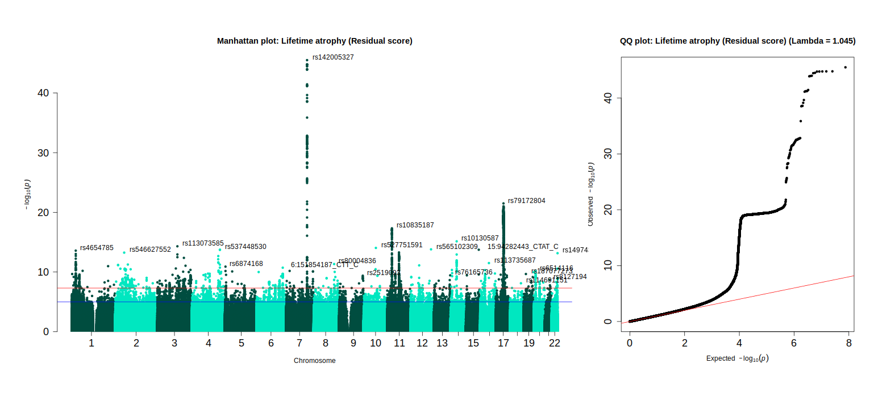

Lifetime brain atrophy GWAS
Here I display the analysis code to accompany our lifetime brain atrophy (LBA) genetics project. For consistency, the analysis steps outlined below match the order of presentation in the manuscript but does not necessarily reflect the order in which analyses were executed.
Pre-registration: https://osf.io/gydmw/
Analysis steps
Data preparation
UK Biobank
1.1. Phenotypic data
1.2. Neuroimaging data
1.3. Genetic data
LBC1936
2.1. Phenotypic data
2.2. Neuroimaging data
Description and characterisation of the LBA phenotype
Measures of LBA indicate age-associated brain shrinkage
Genome-wide association study of LBA
Supplementary analyses
